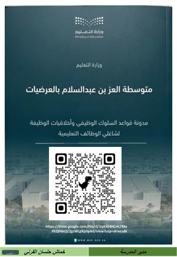
01
ميثاق مهنة التعليم ومدونة السلوك
المؤشر: تلتزم المدرسة بأخلاقيات مهنة التعليم وقواعد السلوك الوظيفي، وتعزّزها لدى منسوبيها.
المملكة العربية السعودية · وزارة التعليم · الإدارة العامة للتعليم بمنطقة مكة المكرمة
متوسطة العز بن عبدالسلام بالعرضيات · العام الدراسي 1448هـ
المجال الأول

المؤشر: تلتزم المدرسة بأخلاقيات مهنة التعليم وقواعد السلوك الوظيفي، وتعزّزها لدى منسوبيها.
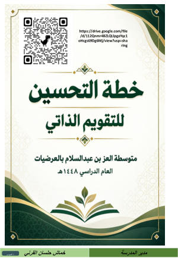
المؤشر: تبني المدرسة خطة تحسين وفق نتائج التقويم الذاتي والخارجي، وتتابع تنفيذها.
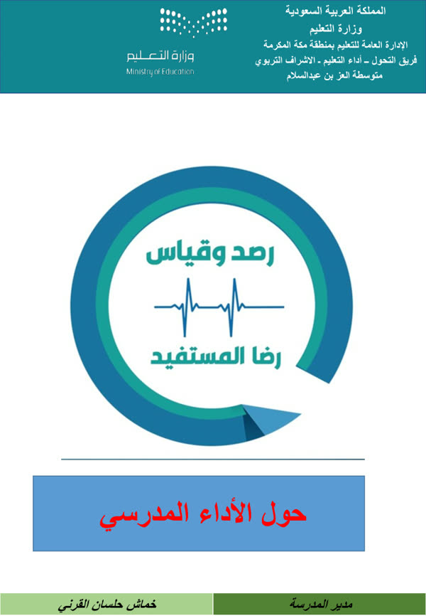
المؤشر: تطبق المدرسة التقويم الذاتي المبني على المعايير المعتمدة من الهيئة بشكل مستمر.
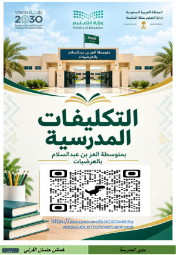
المؤشر: توزّع المدرسة المهام والمسؤوليات على منسوبيها وفق الدليل التنظيمي، وتتابع تنفيذها.
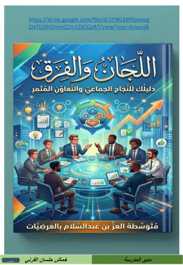
المؤشر: تشكّل المدرسة اللجان والفرق المدرسية وتفعّلها، وتوثّق اجتماعاتها وأعمالها.
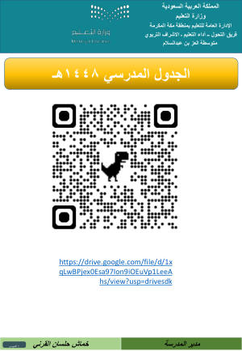
المؤشر: تعدّ المدرسة الجدول المدرسي وتعتمده وتنشره، وتنظّم حصص الانتظار.
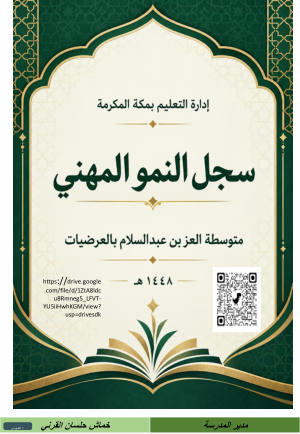
المؤشر: تدعم المدرسة التطوير المهني لمنسوبيها وفقًا لنتائج التقويم وتحليل احتياجاتهم.
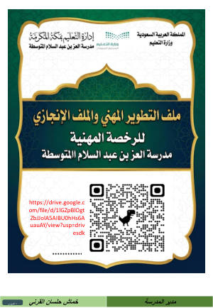
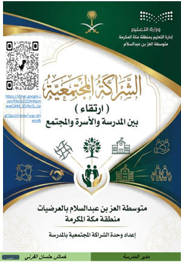
المؤشر: تعقد المدرسة شراكات فاعلة مع الأسرة والمجتمع، وتستثمرها في دعم التعلم.
المؤشر: تعقد المدرسة شراكات فاعلة مع الأسرة والمجتمع، وتستثمرها في دعم التعلم.
جمعية أوى لرعاية الأيتام بالعرضيات بدعم من منصة إحسان، بمقر متوسطة العز بن عبدالسلام (60 متدرباً).
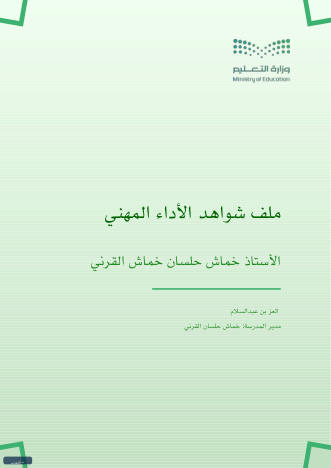
المؤشر: تقود المدرسة العمليات التعليمية والإدارية بفاعلية، وتتابع مؤشرات الأداء الوظيفي.
المجال الثاني
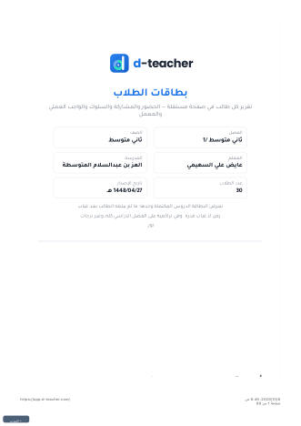
المؤشر: تفعّل المدرسة التقنية الرقمية؛ لدعم تعلم المتعلمين وتلبية احتياجاتهم.
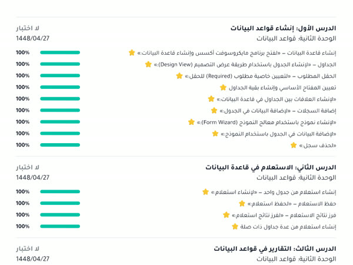
المؤشر: تقدم المدرسة التغذية الراجعة للمتعلمين وأولياء أمورهم، وتتابع تقدمهم بشكل مستمر.
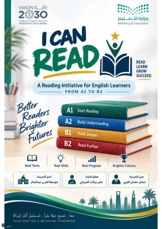
المؤشر: ينوّع المعلمون استراتيجيات التعليم لتنمية مهارات القراءة والفهم لدى المتعلمين.
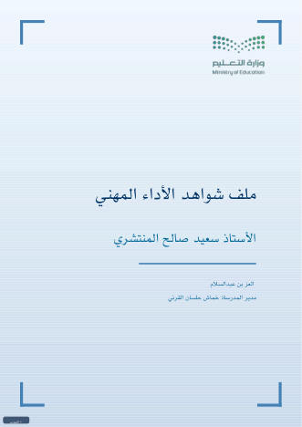
المؤشر: يخطط المعلمون للتعليم، وينوّعون ممارساتهم التدريسية، ويقوّمون تعلم المتعلمين.
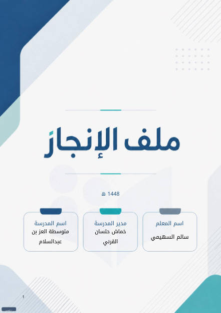
المؤشر: يخطط المعلمون للتعليم، وينوّعون ممارساتهم التدريسية، ويقوّمون تعلم المتعلمين.
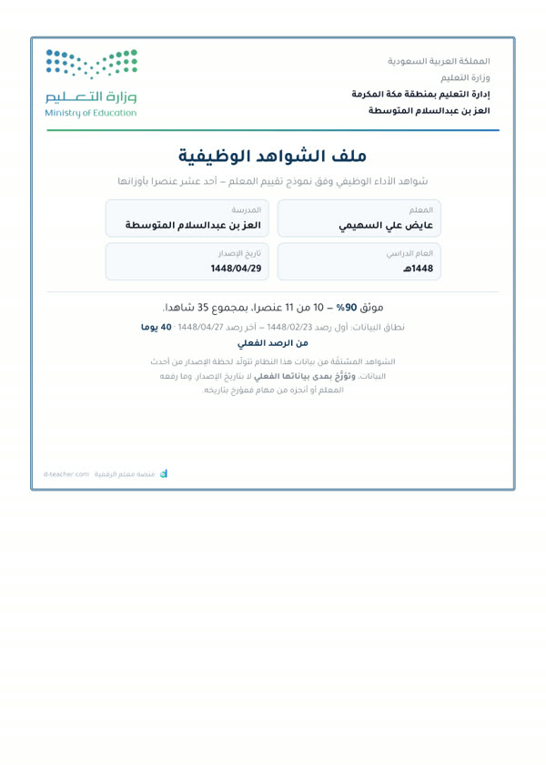
المؤشر: يخطط المعلمون للتعليم، وينوّعون ممارساتهم التدريسية، ويقوّمون تعلم المتعلمين.
المؤشر: يخطط المعلمون للتعليم، وينوّعون ممارساتهم التدريسية، ويقوّمون تعلم المتعلمين.
سجل الإنجاز على منصة كشوف. يُفتح في نافذة جديدة لأن المنصة لا تسمح بعرضه داخل صفحات أخرى.
المجال الثالث
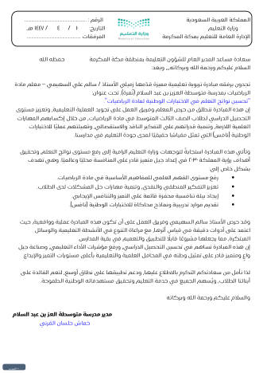
المؤشر: يحقق المتعلمون نتائج مرتفعة في مجال الرياضيات وفقًا للاختبارات الوطنية.
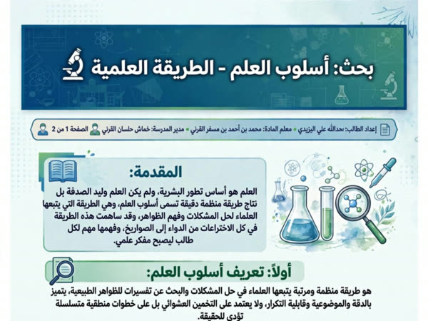
المؤشر: يحقق المتعلمون نتائج مرتفعة في مجال العلوم وفقًا للاختبارات الوطنية.
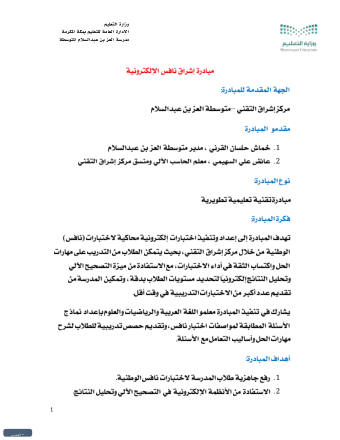
المؤشر: يحقق المتعلمون نتائج مرتفعة في الاختبارات الوطنية (نافس).
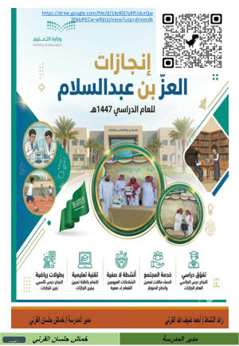
المؤشر: تنفذ المدرسة برامج وأنشطة إثرائية؛ لتطوير مواهب المتعلمين، وتهيئتهم للمستقبل، وتتابعها.
المجال الرابع
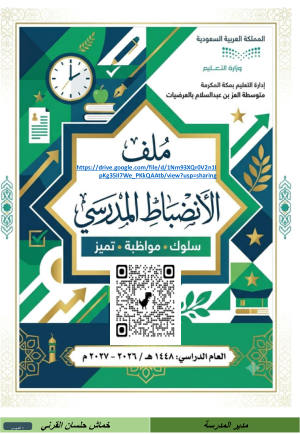
المؤشر: تطبّق المدرسة قواعد السلوك والمواظبة، وتعزّز الانضباط المدرسي.
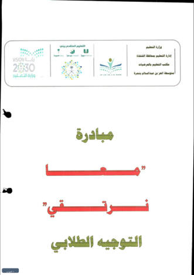
المؤشر: تعزّز المدرسة السلوك الإيجابي والمواظبة والتنافس البنّاء بين المتعلمين.
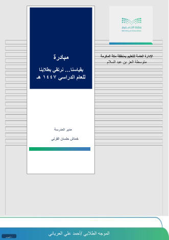
المؤشر: تقدّم المدرسة خدمات التوجيه والإرشاد المبنية على قياس احتياجات المتعلمين.
شواهد رقمية
أرقام مستخرجة من منصة مدرستي (حساب قائد المدرسة) للفترة من 23 أغسطس إلى 15 أكتوبر 2026، أي 8 أسابيع دراسية. المدرسة: 29 معلمًا، و249 طالبًا، و9 فصول. إعداد: أ. عائض السهيمي.
التقرير التفصيلي: التحضير الأسبوعي، والنشاط حسب المادة والصف
1,861 حصة محضّرة من 2,415 حصة في جداول المعلمين. تصل إلى 86.1% بعد الأسبوع الأول، وتجاوزت 90% في 4 أسابيع من 8، وبلغت 98% في الأسبوع السابع.
2-1-1-21-1-1-2المؤشر: تدعم المدرسة تنفيذ المناهج بما يحقق نواتج التعلم المستهدفة.
أنشأها 21 معلمًا خلال الفصل: 27 في أغسطس، و371 في سبتمبر، و213 حتى 15 أكتوبر.
2-1-1-4المؤشر: تفعّل المدرسة التقنية الرقمية؛ لدعم تعلم المتعلمين وتلبية احتياجاتهم.
نشرها 26 معلمًا من 29 على المنصة.
2-1-1-3المؤشر: تنوّع المدرسة في استراتيجيات التعليم والتعلم؛ لتلبية احتياجات المتعلمين ودعم تعلمهم.
أضافها 26 معلمًا (1,145 إثراءً منذ إنشاء المقررات): فيديوهات وملفات وروابط إضافية للطلاب.
2-1-1-12-1-1-4المؤشر: توفر المدرسة فرصًا متكافئة للتعلم تلبي احتياجات المتعلمين، ومنهم ذوو الإعاقة والموهوبون.
أنشأها 10 معلمين على المنصة، إلى جانب الاختبارات الورقية.
2-2-1-12-2-1-2المؤشر: تطبق المدرسة أساليب وأدوات تقويم متنوعة؛ للكشف عن مستويات أداء المتعلمين المختلفة.
229 درسًا متزامنًا (فصول افتراضية مباشرة) و1,618 درسًا غير متزامن يفتحه الطالب متى شاء.
2-1-1-43-2-1-6المؤشر: تفعّل المدرسة التقنية الرقمية؛ لدعم تعلم المتعلمين وتلبية احتياجاتهم.
10 إعلانات عامة للمدرسة و91 إعلانًا للفصول، نشرها 9 معلمين.
1-3-1-11-3-1-2المؤشر: تعزز المدرسة بناء العلاقات الإيجابية والتعاون في المجتمع المدرسي.
حلّلت المدرسة 19 تقريرًا من المنصة، وحدّدت الفجوات وأهدافًا قابلة للقياس لنهاية الفصل الثاني، وتعيد القياس بالخطوات نفسها لإثبات الأثر.
1-4-1-32-2-1-31-4-1-4المؤشر: تحلل المدرسة نتائج التقويم، وتوظفها في تحسين عمليات التعليم والتعلم والتقويم.
شواهد مساندة
المؤشر: تعزز المدرسة بناء العلاقات الإيجابية والتعاون في المجتمع المدرسي.
تكريم منسوبي متوسطة العز بن عبدالسلام بحضور مدير المدرسة أ. خماش حلسان القرني.
المؤشر: تعزز المدرسة بناء العلاقات الإيجابية والتعاون في المجتمع المدرسي.
لقاء لمنسوبي المدرسة وكلمة مدير المدرسة.
المؤشر: تعزز المدرسة بناء العلاقات الإيجابية والتعاون في المجتمع المدرسي.
تسليم دروع التكريم للمعلمين داخل المدرسة.
المؤشر: تفعل المدرسة التقنية الرقمية؛ لدعم تعلم المتعلمين وتلبية احتياجاتهم.
لوحة صفية على منصة بادلت لنشر الواجبات والمحتوى ومشاركة الطلاب.